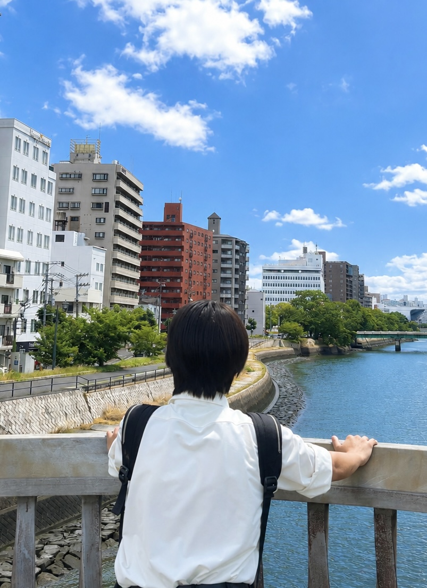

本サイトの制作や業務効率化など、ICTを活用した大会運営を担当します。

ICT部長
廣本 奏（ひろもと かなで）
広島工業大学高等学校 高校2年
#田舎の民#162cm
ICT部長兼企画部の廣本です。参加者の方が方安心して大会に臨めるよう、迅速かつ正確な情報掲載に努めます。みんなに会える日が待ち遠しゅうてたまらんけぇ、ぶち楽しみにしちょるよ！
中村 圭孝（なかむら よしたか）
熊本県立第一高等学校 高校2年
#だご熊本弁ばい#卓球幽霊部員
ICT部兼総務部の中村圭孝です！みなさんが来てよかったと思える大会になるよう、全力でがんばります！当日、皆さんとお会いできるのを楽しみにしています！！
← ホームに戻る